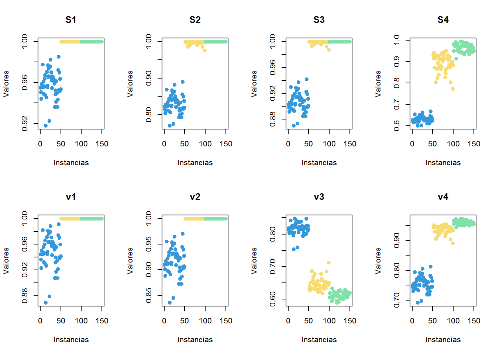
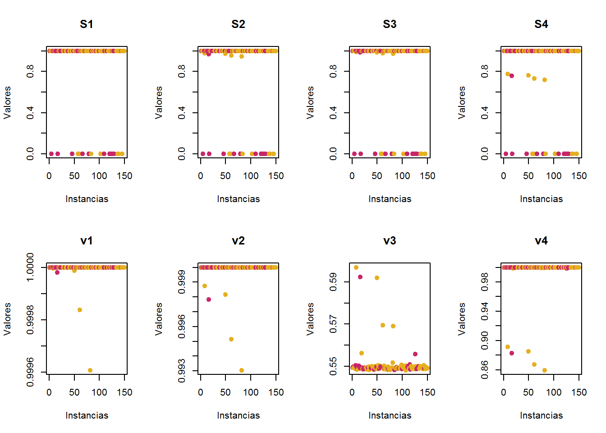
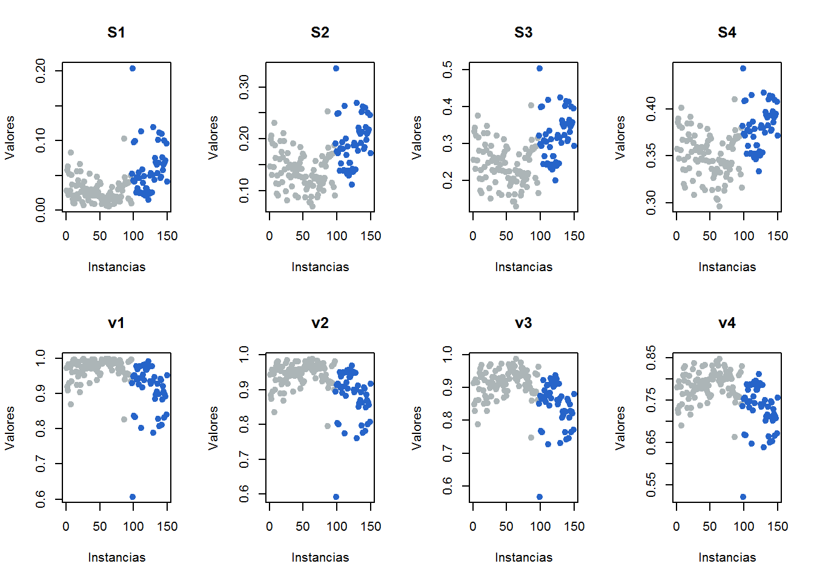

Capítulo 6 Distintas Funciones de Activación en un Perceptrón
En éste ejercicio busco probar el rendimiento de un perceptrón al utilizar distintas funciones de activación.
6.1 Datos a utilizar
Iris: datos numéricos de 3 diferentes familias de flores (longitud y anchura de sépalo y pétalo).PimaIndiansDiabetes: datos de la tribu Pima en EUA, con mediciones metabólicas clínicas y paraclínicas, con variable objetivo de diabético o no diabético.Sonar: Datos de estudios de Sonar en superficies rocósas y metálicas.
A continuación se muestra un breve resumen de las tres bases de datos:
6.1.1 Iris
Características distintivas:
- Valores mayores a 1 con excepción de la variable
Petla.Width. - Base de datos ampliamente utilizada para ejercicios de éste tipo.
## Sepal.Length Sepal.Width Petal.Length Petal.Width
## Min. :4.300 Min. :2.000 Min. :1.000 Min. :0.100
## 1st Qu.:5.100 1st Qu.:2.800 1st Qu.:1.600 1st Qu.:0.300
## Median :5.800 Median :3.000 Median :4.350 Median :1.300
## Mean :5.843 Mean :3.057 Mean :3.758 Mean :1.199
## 3rd Qu.:6.400 3rd Qu.:3.300 3rd Qu.:5.100 3rd Qu.:1.800
## Max. :7.900 Max. :4.400 Max. :6.900 Max. :2.500
## Species
## setosa :50
## versicolor:50
## virginica :50
##
##
## 6.1.2 Pima
Características distintivas:
- Contiene valores faltantes.
- Valores tienden a ser mayores a 1 por el orden de las decenas con excepción de la variable
pregnant.
## pregnant glucose pressure triceps
## Min. : 0.000 Min. : 0.0 Min. : 0.00 Min. : 0.00
## 1st Qu.: 1.000 1st Qu.: 97.0 1st Qu.: 62.00 1st Qu.: 0.00
## Median : 3.500 Median :111.5 Median : 71.00 Median :23.00
## Mean : 4.093 Mean :117.4 Mean : 68.72 Mean :19.57
## 3rd Qu.: 7.000 3rd Qu.:138.8 3rd Qu.: 79.50 3rd Qu.:31.75
## Max. :15.000 Max. :197.0 Max. :122.00 Max. :60.00
## diabetes
## neg:97
## pos:53
##
##
##
## 6.1.3 Sonar
Características distintivas:
- Valores entre 0 y 1.
- Valores generados por equipo electrónico.
## V1 V2 V3 V4
## Min. :0.00250 Min. :0.00060 Min. :0.00240 Min. :0.00580
## 1st Qu.:0.01360 1st Qu.:0.01638 1st Qu.:0.01963 1st Qu.:0.02455
## Median :0.02370 Median :0.03285 Median :0.03650 Median :0.04445
## Mean :0.03171 Mean :0.04274 Mean :0.04866 Mean :0.05924
## 3rd Qu.:0.03855 3rd Qu.:0.05720 3rd Qu.:0.06380 3rd Qu.:0.08120
## Max. :0.13710 Max. :0.23390 Max. :0.30590 Max. :0.42640
## Class
## M:53
## R:97
##
##
##
## 6.2 Preparación de los datos para uso del perceptrón
6.2.1 Selección y preparacion de subconjunto de datos
o <- matrix(c(0.25,0.32,0.30,0.28), ncol = 4, nrow = 1) #pesos expresados como una matriz de 1x4.
#o1 <- matrix(c(1,1,1,1), ncol = 4, nrow = 1)
####### Conviertiendo los datos a matriz y excluyendo la variable objetivo. ############
#Iris
irism <-as.matrix(iris[,1:4])
#Pima
pimam <- as.matrix(pima[,1:4])
#Sonar
sonarm <- as.matrix(sonar[,1:4])6.3 Explorando resultados por función
6.3.1 Graficando las funciones
Antes de realizar una aproximación a los datos, es importante explorar el comportamiento de cada función, a continuación se expresa de manera gráfica el comportamiento de ambas “familias”.
- Funciones S-Shaped
S1: \(\frac{1}{1+e^{-2x}}\)
S2: \(\frac{1}{1+e^{-x}}\)
S3: \(\frac{1}{1+e^{(-x/2)}}\)
S4: \(\frac{1}{1+e^{(-x/3)}}\)
- Funciones V-Shaped
V1: \(\left| erf(\frac{\sqrt{\pi}}{2}) \right| = \left| \frac{\sqrt{\pi}}{n} \int_0^{(\sqrt{\pi}/2)^x}e^{t^2}dt \right|\)
v2: \(\left| tanh(x) \right|\)
V3: \(\left| \frac{(x)}{\sqrt{1+x^2}} \right|\)
v4: \(\left| \frac{2}{\pi}arctan \left( \frac{\pi}{2}x \right) \right|\)

6.3.2 Con los datos de Iris

6.3.3 Con los datos pima

6.3.4 Con los datos sonar

6.4 Observaciones
Se puede apreciar que el rendimiento de las funciones de activación está relacionado con los tipos de datos que procese y su dinámica en particular. Ésto se vuelve obvio al observar los resultados anteriores. Otro punto igualmente importante es el ajuste de los pesos (valor \(\theta\) en la fórmula general), en ésta aproximación se está utilizando un vector con números aleatorios entre \(0\) y \(1\) de longitud \(n = 4\). Una vez que el proceso de retropropagación se implemente, se esperaría que el rendimiento mejorar sustancialmente.
6.4.1 Modificación de los datos en función a las observaciones
Derivado de las observaciones anteriores se decide exponer los datos de las tres bases de datos a algunas modificaciones para obtener corroborar los argumentos del párrafo anterior.
A continuación se muestra los cambios realizados a los 4 valores feature de las bases de datos:
- \(log_{10}(x[,1])\)
- \(\sqrt{x[,2]}\)
- \(x[,3]^2\)
- \(x[,4]^{1/3}\)
6.4.2 Visualización
6.4.2.1 Iris

6.4.2.2 pima

6.4.2.3 sonar
